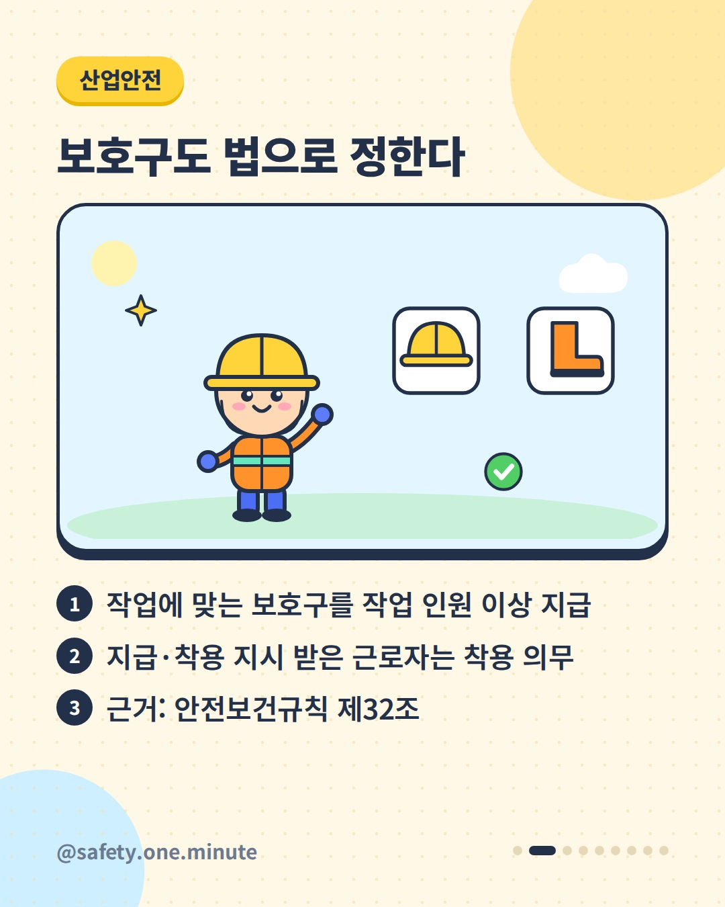
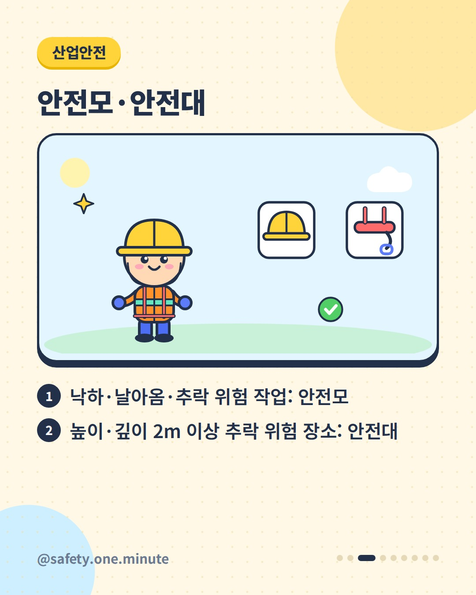
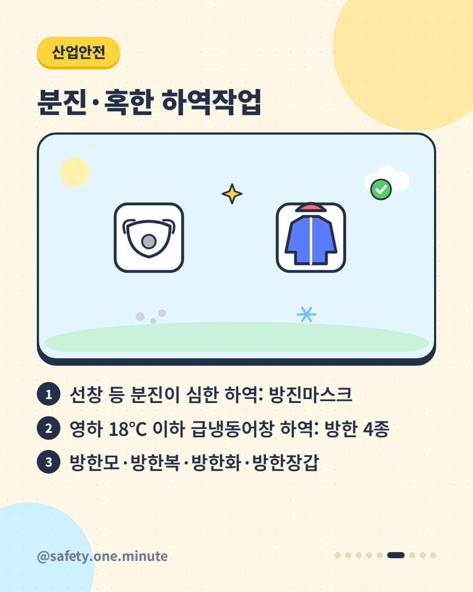
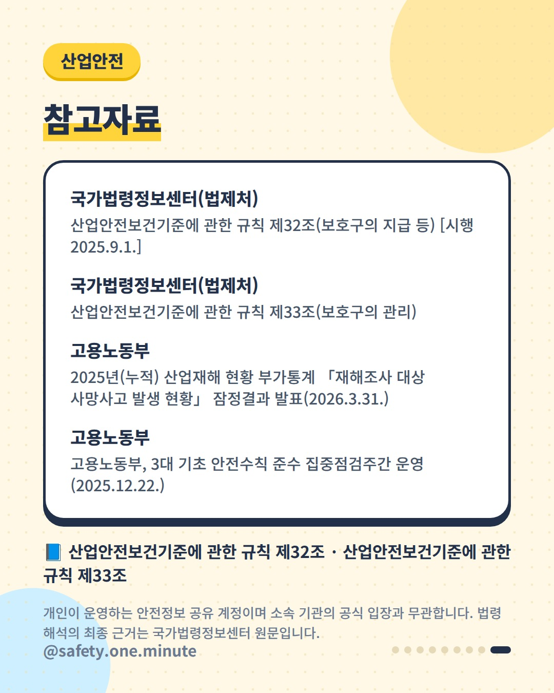

작업별 보호구 지도 — 9장 (4:5)




캡션
우리 작업에는 어떤 보호구가 필요할까요? 산업안전보건기준에 관한 규칙 제32조는 작업 종류별로 지급해야 할 보호구를 정하고 있습니다. 사업주는 작업조건에 맞는 보호구를 작업하는 근로자 수 이상 지급하고 착용하도록 해야 하며, 지급받거나 착용 지시를 받은 근로자도 착용해야 합니다. ▪ 물체 낙하·날아옴·추락 위험: 안전모 ▪ 높이·깊이 2m 이상 추락 위험 장소: 안전대 ▪ 낙하·충격·끼임·감전·정전기 위험: 안전화 ▪ 물체 흩날림: 보안경 / 용접 불꽃: 보안면 ▪ 감전 위험: 절연용 보호구 / 고열 화상 위험: 방열복 ▪ 선창 등 분진 심한 하역: 방진마스크 ▪ 영하 18℃ 이하 급냉동어창 하역: 방한모·방한복·방한화·방한장갑 ▪ 이륜차·원동기장치자전거·자전거등으로 배달·운반: 도로교통법 시행규칙 기준 안전모 제33조에 따라 지급한 보호구는 수시로 점검해 이상이 있으면 수리·교환하고, 방진마스크 필터 같은 소모품은 충분히 갖춰 둡니다. 고용노동부 발표(2026.3.)에 따르면 2025년 재해조사 대상 사고사망자는 605명(잠정)으로 전년보다 16명 늘었고, 떨어짐은 증가한 유형이었습니다. 고용노동부는 2025년 12월 안전모·안전대·안전띠 미착용 사망사고가 잦다며 집중점검을 실시하기도 했습니다. ※ 세부 요건은 법령 원문(2025.9.1. 시행본 기준)을 확인하세요. 출처: - 국가법령정보센터(법제처) – 산업안전보건기준에 관한 규칙 제32조·제33조 - 고용노동부 – 2025년 재해조사 대상 사망사고 발생 현황 잠정결과(2026) - 고용노동부 – 3대 기초 안전수칙 준수 집중점검주간 운영(2025) 개인이 운영하는 안전정보 공유 계정이며 소속 기관의 공식 입장과 무관합니다. 법령 해석의 최종 근거는 국가법령정보센터 원문입니다. #보호구 #안전모 #안전대 #안전화 #보안경 #보안면 #절연용보호구 #방진마스크 #배달안전 #산업안전 #산업안전보건기준에관한규칙 #안전수칙 #현장안전 #안전보건